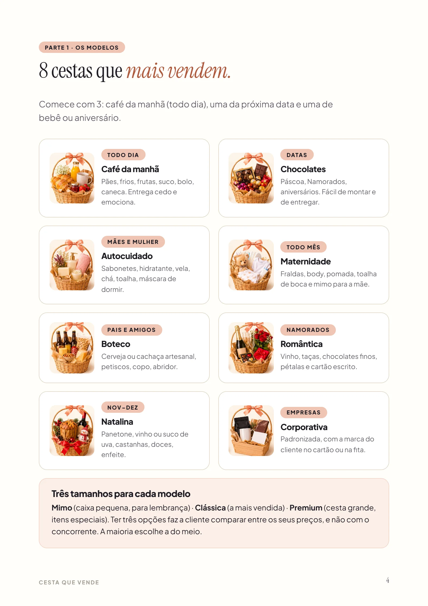
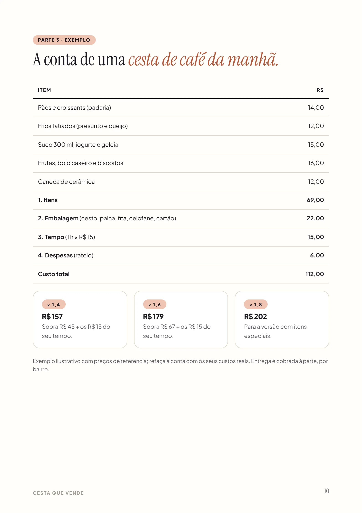
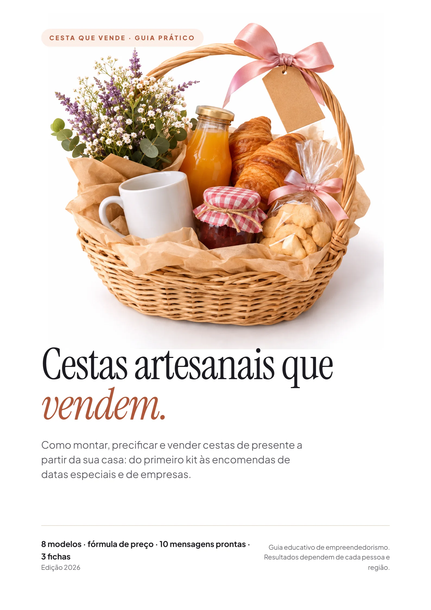
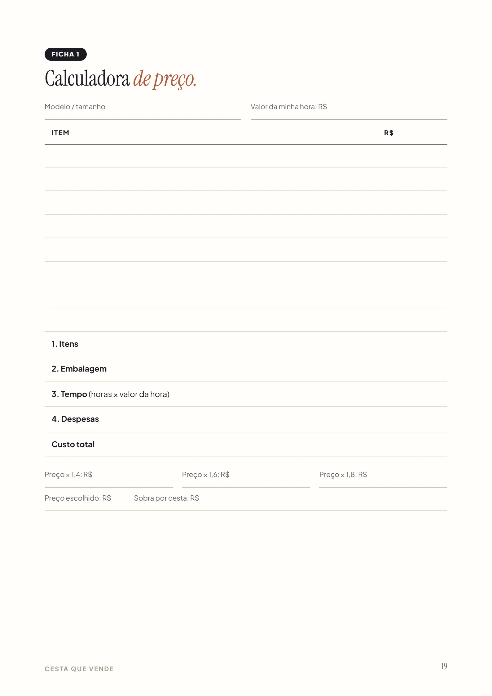
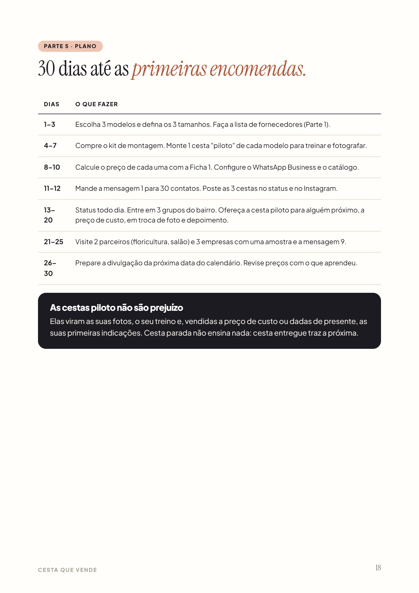
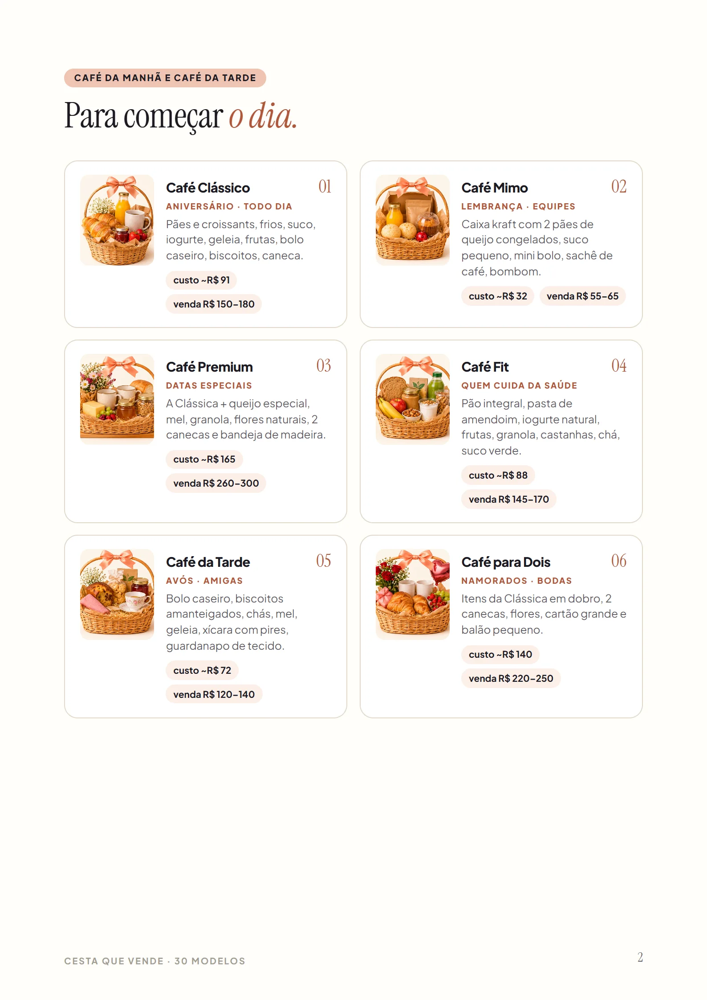

Trabalho de graça
Somou os itens, pôs um pouco a mais e esqueceu embalagem, tempo e gasolina. Vendeu e não sobrou nada.
Todo dia alguém procura uma cesta para presentear e paga de R$ 150 a R$ 200 por ela. Aprenda a montar, cobrar o preço certo e vender pelo WhatsApp, começando com pouco, sem estoque e sem sair de casa.



Sem loja e sem estoque: a cliente paga o sinal no Pix, você compra os itens depois do pedido e monta na sua mesa. O dinheiro entra antes de você gastar.
Somou os itens, pôs um pouco a mais e esqueceu embalagem, tempo e gasolina. Vendeu e não sobrou nada.
Itens soltos, palha no fundo, laço torto, foto escura. A cliente compara e compra de outra.
Sem catálogo, sem calendário e sem saber o que responder quando perguntam o preço.
Os 8 tipos que mais vendem, o calendário do ano e o kit para começar com pouco.
O passo a passo da montagem, a regra do triângulo e o laço perfeito.
A fórmula do preço, fotos com o celular e 10 mensagens prontas para o WhatsApp.
Um trecho real do guia e do caderno de modelos. Toque numa ocasião.
Mexa nos valores e veja o que fica para você por cesta e por mês.
Sobra por mês (simulação)
R$ 0
Simulação educativa: não é promessa de renda. O resultado depende de quantas cestas você vende, dos seus custos e da sua região. Use a fórmula do guia para chegar ao preço certo.
21 páginas para ler no celular e imprimir. Toque numa página para ampliar.
Exemplo ilustrativo. O guia organiza o processo; os resultados dependem de cada pessoa.
Para avisar os contatos, responder orçamento, fechar com sinal, recuperar quem sumiu, pós-venda, indicação e proposta para empresas.

Calculadora de preço, caderno de pedidos e checklist de cada cesta, da montagem ao pós-venda.

O que fazer em cada semana, das cestas piloto às primeiras encomendas.

Cada modelo com ocasião, lista de itens, custo de referência e preço sugerido: café da manhã, datas, Natal, empresas, maternidade e temas. Aparece como opcional no pagamento; nada vem marcado.
R$19.9
Pagamento único, sem mensalidade.
Quero aprender a vender cestasGarantia de 7 dias. Leia, monte a sua primeira cesta. Se achar que não é para você, peça o reembolso em até 7 dias e recebe 100% do valor, sem perguntas.
No pagamento, aparece como opcional o caderno “30 modelos de cestas”. Nada vem marcado. Pix ou cartão; o acesso chega no seu e-mail logo após o pagamento.
Consegue. O guia começa do zero: o que comprar, a ordem de montagem e o acabamento, com as cestas piloto para treinar antes de vender.
O material de montagem (bases, palha, fitas, celofane, cartões) fica entre R$ 170 e R$ 300. Os itens de cada cesta você compra depois do pedido, com o sinal da cliente.
Depende de quantas cestas você vender, dos seus custos e da sua cidade. O guia mostra como calcular um preço que paga os itens, a embalagem e o seu tempo, e como conseguir os primeiros pedidos. Não prometemos valores.
Não para começar. Quando as vendas ficarem frequentes, o guia explica o MEI e os cuidados com alimentos e bebidas.
Funciona: aniversário, bebê e datas especiais existem em todo lugar, e em cidade pequena a indicação corre mais rápido. O guia mostra como vender para quem já te conhece e para empresas locais.
Dá. O plano de 30 dias leva das cestas piloto às primeiras encomendas, e o guia mostra quando divulgar e como oferecer cestas para empresas, que fecham pedidos entre outubro e dezembro.
Logo depois do pagamento, você recebe no e-mail o acesso à área de membros da Kiwify com o PDF para baixar, ler no celular e imprimir.
Você tem 7 dias de garantia. Se achar que não é para você, pede o reembolso pela própria Kiwify e recebe 100% do valor.
Pagamento único · garantia de 7 dias · acesso na hora